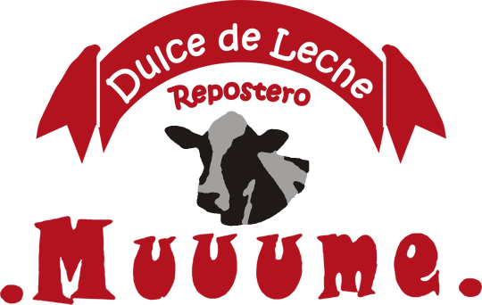
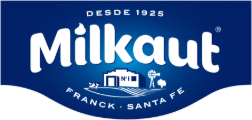
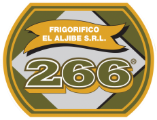

Todo para tu elaboración, en un solo lugar.
Harinas, margarinas, cremas, lácteos y productos de repostería para panadería, pizzería, confitería y comercios de la zona. Atención de persona a persona, con más de 20 años de experiencia.
Tu pedido, desde el celular y a cualquier hora.
- Entrás a nuestra página de pedidos desde el celular. No hay que instalar nada.
- Buscás los productos, elegís la cantidad y ves las ofertas de la semana.
- Tocás «Enviar» y el pedido nos llega por WhatsApp. El presupuesto te llega en el día.
- Las ofertas de la semana son solo por la app.
Trabajamos con marcas líderes


Ver su Instagram ↗ SEGUNDA COLONIAVer su página ↗ Ver su página ↗ Ver su página ↗ Ver su página ↗ Ver su página ↗ Ver su página ↗ Ver su página ↗ Ver su página ↗ Ver su página ↗ Ver su Instagram ↗ Ver su página ↗
Ver su página ↗ Ver su página ↗Abastecemos a los que hacen el pan de todos los días.
Somos una distribuidora familiar de Llavallol. Trabajamos con las marcas que vos ya conocés y te atendemos como a un vecino: con stock, buen precio y el pedido listo cuando lo necesitás.
Reparto a tu negocio
Te llevamos el pedido a Lomas de Zamora, Adrogué, Burzaco, Mármol, Monte Grande y Longchamps.
Pedidos desde el celular
Armás tu pedido y el presupuesto te llega en el día por WhatsApp.
Atención de persona a persona
Te asesoramos, te avisamos de las ofertas y conocemos lo que pide tu negocio.
Ofertas de la semana
Todas las semanas hay productos con precio especial. Se hacen solo por la app: tocá acá y las ves.
Ver las ofertas ›Facilidades para tu negocio.
Panaderías y pizzerías de la zona que confían en nosotros.
«Acá va una frase real de un cliente.»
«Pedile a 2 o 3 clientes de confianza una frase corta.»
«Con su permiso, va con el nombre del negocio.»
Horarios de atención
| Lunes a viernes | 8:00 a 15:30 |
| Sábados (solo por mostrador) | 8:00 a 14:00 |
| Domingos | Cerrado |
| Feriados (solo por mostrador) | 8:00 a 13:00 |